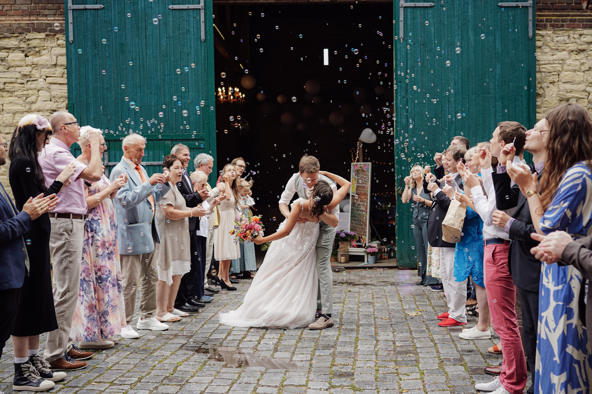
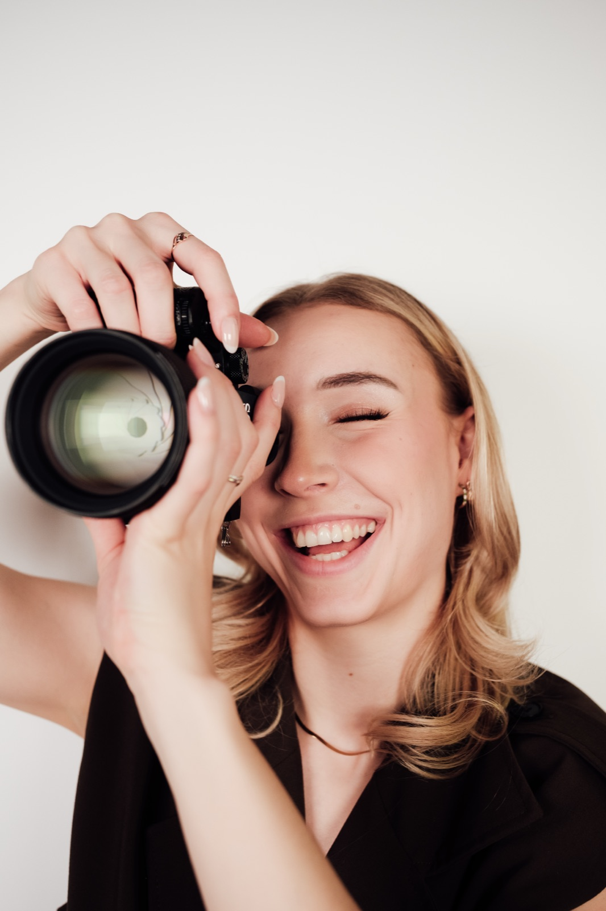
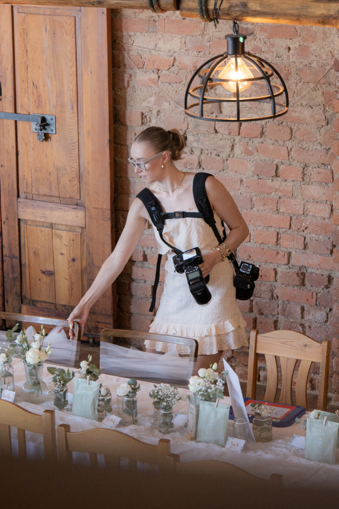
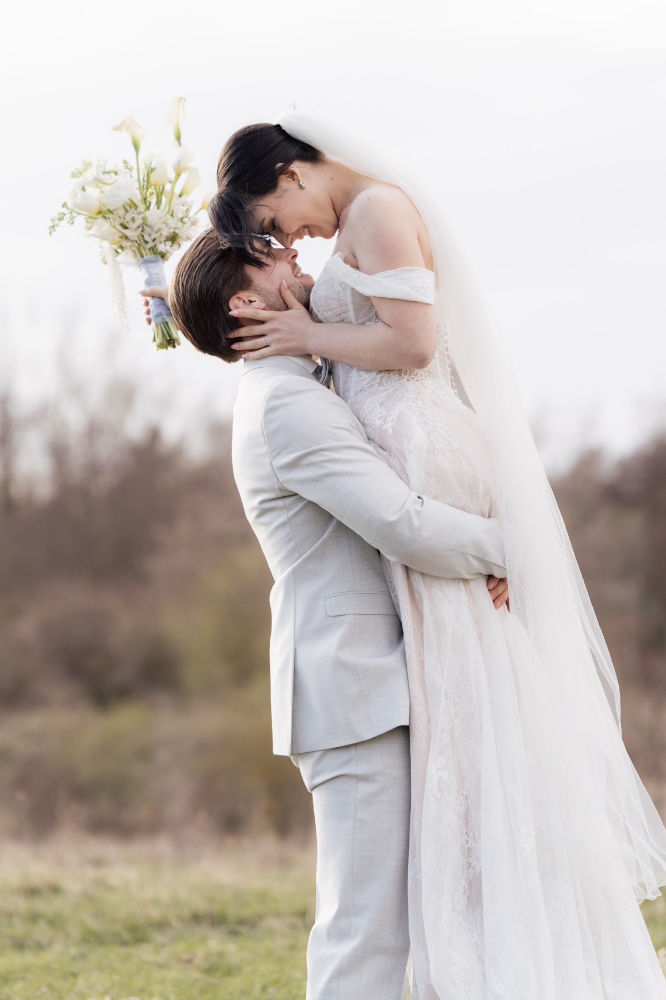
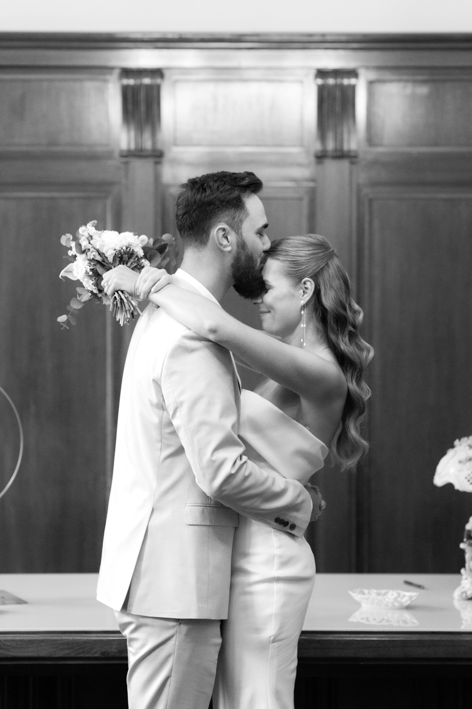

Hochzeitsfotografie Leipzig


Und einem Blick
für das Leise.
Hi, ich bin Diana,
ich liebe den Sommer, Tiere, Kinder, Momente, in denen man alles um sich herum vergisst, und vor allem liebe ich die LIEBE.
Ich liebe Hochzeiten, bei denen gelacht, geweint, getanzt und einfach das Leben gefeiert wird. Bei denen nicht alles perfekt sein muss, sondern vor allem echt ist. Bei denen ihr den Moment genießt und irgendwann abends denkt: Wow, was war das bitte für ein Tag?
Genau das möchte ich für euch festhalten. Nicht nur, wie eure Hochzeit aussah, sondern vor allem, wie sie sich angefühlt hat. Die Freudentränen, die heimlichen Blicke, die Umarmungen und all die kleinen Momente, die ihr vielleicht selbst gar nicht mitbekommt.
Ich bin lieber mittendrin statt nur dabei, lache mit euch, fiebere mit euch mit und werde manchmal ganz still, wenn ein Moment einfach für sich spricht.
Denn eure Bilder sollen nicht einfach nur schön sein. Sie sollen euch zurück an diesen Tag bringen, mitten hinein in all die Gefühle, sodass ihr auch Jahre später beim Anschauen wieder dieses Kribbeln im Bauch spürt.
Erzählt mir von euch ↗Was meine Paare erzählen.
„Diana war unglaublich professionell und nimmt mit ihrer ruhigen und unfassbar lieben Art selbst der nervösesten Braut die Aufregung. Bei der anschließenden Trauung und dem Sektempfang war Diana sehr aufmerksam, aber dennoch zurückhaltend, so dass man kaum bemerkte, dass sie da war.“

„Super tolle und liebevolle Fotografin. Sie ist unglaublich talentiert darin, die richtigen Momente einzufangen, und auch kooperativ in Bezug auf individuelle Vorstellungen. Wir können Diana nur weiterempfehlen.“

„Sie hat beim Hochzeitsshooting eine unglaublich entspannte Atmosphäre geschaffen, sodass wir uns vor der Kamera sofort wohlgefühlt haben. Die Bilder sind wunderschön, authentisch und fangen die Emotionen unseres Tages perfekt ein.“
01 / 03
Die passende Zeit
für eure Geschichte.
Vom standesamtlichen Ja bis zur großen Feier. Ihr entscheidet, wie lange ich an eurer Seite bin.
2Stunden
Standesamt
Für euer Ja und die ersten gemeinsamen Erinnerungen als Ehepaar.
Diese Momente begleite ich
- Begleitung der Trauung
- Gratulationen
- Paarshooting
- Gruppenfotos
699 €
6Stunden
Halbtagsreportage
Vom Ja-Wort bis zum Beginn eurer Feier. Mit Zeit für euch und eure Gäste.
Zusätzlich zum Standesamt
- Sektempfang & Atmosphäre
- Paarshooting & Gruppenfotos
- Beginn der Feier
- Mehr Zeit für eure Gäste
1.399 €
Meist gebucht
10Stunden
Ganztagsreportage
Die ganze Geschichte eures Tages, von der Vorfreude bis zur Party.
Zusätzlich zur Halbtagsreportage
- Getting Ready
- Die gesamte Feier
- Begleitung bis zur Party
- Die Geschichte eures ganzen Tages
2.099 €
Immer inklusive
Persönliches Vorgespräch
Alle gelungenen Bilder
Anfahrt innerhalb Leipzig
Mein Ausgangspunkt ist Leipzig. Ich begleite Hochzeiten in Leipzig, deutschlandweit und europaweit. Für Feiern außerhalb Leipzigs stimmen wir Anreise und alle Details persönlich ab.
Für das standesamtliche Ja gibt es die zweistündige Begleitung. Sechs Stunden erzählen zusätzlich vom Sektempfang und dem Beginn eurer Feier. Mit zehn Stunden kann ich euren Tag vom Getting Ready bis zur Party begleiten. Wenn ihr unsicher seid, finden wir eure passende Begleitung im Kennenlerngespräch.
In jeder Begleitung sind ein Kennenlerngespräch, Beratung und Tipps für euren Hochzeitstag, alle gelungenen Bilder professionell bearbeitet und die Anfahrt innerhalb Leipzigs enthalten.
Auf jeden Fall. Wählt im Anfrageformular einfach aus, dass euer Datum noch nicht feststeht, und teilt mir alles mit, was ihr über Ort und Zeitraum bereits wisst.
Ich melde mich persönlich bei euch. Anschließend lernen wir uns kennen und besprechen eure Wünsche, Fragen, den Ablauf und die passende Begleitung.
Ihr erhaltet alle gelungenen Bilder eurer Begleitung. Die Auswahl richtet sich nach dem Ablauf und der gebuchten Dauer eures Hochzeitstages. Da jede Hochzeit ein ganz besonderes und individuelles Ereignis ist, lege ich keine bestimmte Anzahl an Bildern fest. Für mich gilt: „Jeden Moment, der eure Geschichte erzählt, halte ich fest.“
Dianas Weddings besteht bereits aus einem kleinen Team. Sollte ich an eurem Wunschdatum selbst nicht verfügbar sein, frage ich direkt meine lieben Kollegen Helen und Osman an. Je nach Verfügbarkeit können sie eure Hochzeit fotografisch begleiten. Die anschließende Bildbearbeitung übernehme ich persönlich, sodass ihr eure Fotos im gewohnten Stil von Dianas Weddings erhaltet.
Erzählt mir von eurem Tag.
Wann und wo möchtet ihr heiraten? Schreibt mir von euren Plänen und ich schaue, ob ich euch begleiten kann.
Unverbindliche Terminanfrage, keine automatische Verfügbarkeitsauskunft.